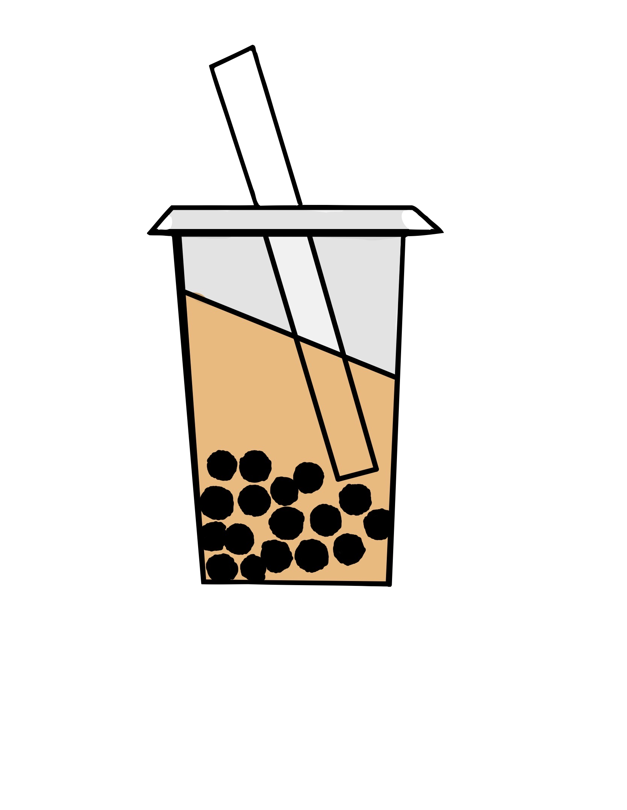

Bubble Tea Market in the US
Overview
Bubble tea, also known as boba or tapioca milk tea is a popular drink that originated in Taiwan in the 1980s. The bubble tea market is projected to reach $4.3 billion by the year 2027.
Bubble tea, also known as boba or tapioca milk tea is a popular drink that originated in Taiwan in the 1980s. The bubble tea market is projected to reach $4.3 billion by the year 2027.
The dataset for this project was collected from Yelp API and different boba shops websites through web scraping in python. Data for the boba shops in the Bay Area from Kaggle https://www.kaggle.com/vnxiclaire/bobabayarea was also used.
The data from Kaggle was already in tabular form and nicely formatted by columns, however, I did have to do a substantial data cleanup for the data collected from Yelp API. The data will was processed using Python and the Pandas framework and saved as a csv file. I have used boba shop names, total number of bubble tea shops, location, city, ratings, etc. for this project.
Shows the ranking of the most popular boba chains in the United States based on the count of total boba establishments. Kung Fu Tea ranks the highest with a total of a 367 boba shops across the US. Kung Fu Tea clearly has the highest market share in the boba industry.
There is a positive correlation between the price of a boba drink and the cost of living index per city. The price variable has been calculated using the average price of the most popular classic milk tea flavor from five boba shops. Both San Francisco and San Jose have the highest cost of living index and boba is more expensive in SF and SJ.
Shows the distribution of ratings for boba shops in the Bay Area. In the Bay Area, the customer satisfaction level and service quality is on the higher side.
Bubble Chart Visualization to show both popularity and demand for boba in the Bay Area. The size of the bubble determines the total count of boba shops. Both San Jose and San Francisco have the highest number of boba shops in the Bay Area suggesting that there is a much greater demand for bubble tea in those cities.